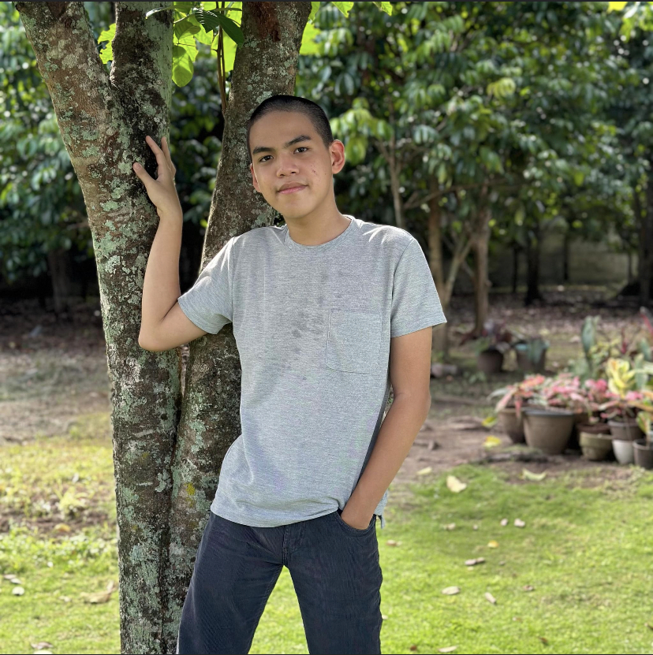

<html>
<head>
<!DOCTYPE html>
<html lang="en">
<head>
    <meta charset="UTF-8">
    <meta name="viewport" content="width=device-width, initial-scale=1.0">
    <title>Highlighting The Importance Of Sleep</title>
</head>
<body>
    
</body>
</html>
</head>
<link rel="stylesheet" href="style.css">
</head>

<!--For navbar-->

<div id="navbar" class="box">

    <div.logo>
        
    </div.logo>

    <div class="links"><a href="index.html" id="home">Home</a></div>
    <div class="links"><a href="page2.html" id="sleep">Importance of Sleep</a></div>
    <div class="links"><a href="page3.html" id="data">Database</a></div>
    <div class="links"><a href="page4.html" id="conclude">Conclusion</a></div>
    <div class="links"><a href="page5.html" id="ref">References</a></div>
    <div class="links"><a href="page6.html" id="info"> About Me</a></div>
</div>

</div>

<div class="index_banner">
    <h2> Hello there! This is my Statisctics Page! </h2>
    <p> <span style="font-family: 'Lucida Sans', 'Lucida Sans Regular', 'Lucida Grande', 'Lucida Sans Unicode', Geneva, Verdana, sans-serif; color: bisque;"> A survey and research project made by yours truly, Adrian Julian Garcia, Tatiana Margaret Pandatu and Daniel Sebastian De Rosa </span> </p>
    <br>
    <br>
    <br>
    <h3> We surveyed 50 people from Batch 27 on how many hours per day do they sleep.<br>
    We also asked them on why they get so much or so little sleep. This research aims <br>
    to present students with opportunities on time management in order to get the ample <br>
    amount of rest they all deserve.
    </h3>

    <br>
    <br>
    <br>
    <br>

    <!--For footer-->

    <div class="footer">
        <a href="https://github.com/LukeSkywalker-28">  </a>
        <a href="https://github.com/Miss-Tatiana-Pandatu">  </a>
        <a href="https://github.com/Mangkanorr">  </a>
        <p> © Brands by Adrian Garcia. In Partnership with Tatiana Margaret Pandatu and Daniel Sebastian De Rosa. Fair use and all rights reserved 2023 <br> 
        Be sure to check our github profiles --------------------------------------------------------------------------------------------------------------------------------------------------------></span></p>
        </div>  

    <!--Navbar and footer effective for all pages-->
<body>
</body>